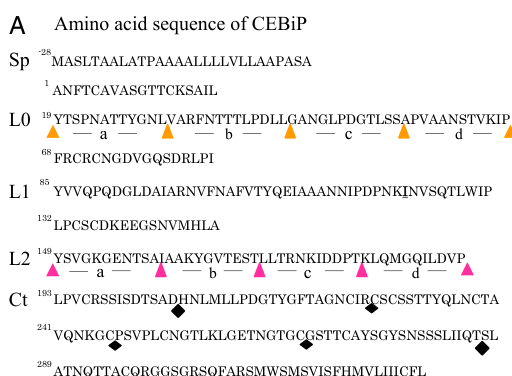

CEBiP (chitin elicitor-binding protein, also Os-LYP1) is a plasma membrane-associated LysM receptor-like protein of rice that lacks an intracellular kinase domain. The mature 328-residue, heavily N-glycosylated ectodomain carries three tandem LysM modules (two canonical LysMs plus an N-terminal LysM0 seen in the crystal structure) followed by a cysteine-rich domain, and is anchored at the C terminus by a short hydrophobic segment. CEBiP is the major high-affinity binding site for fungal chitin oligosaccharides in rice cells; it preferentially binds long, fully N-acetylated oligomers (heptamer-octamer) through its central LysM, and two CEBiP ectodomains sandwich a single chitin octamer, driving receptor dimerization. Chitin binding promotes formation of a hetero-oligomeric receptor complex with the LysM receptor kinase OsCERK1, which transduces the signal (via OsRacGEF1-OsRac1 and RLCK185-MAPK cascades) to the oxidative burst, defence-gene expression and phytoalexin synthesis. Loss of CEBiP strongly reduces chitin-triggered responses but not responses to peptidoglycan or lipopolysaccharide, and makes rice more permissive to the rice blast fungus Magnaporthe oryzae, whose secreted LysM effector Slp1 competes with CEBiP for chitin oligomers to evade this recognition.
| GO Term | Evidence | Action | Reason |
|---|---|---|---|
|
GO:0005515
protein binding
|
IPI
PMID:21070404 Two LysM receptor molecules, CEBiP and OsCERK1, cooperativel... |
MODIFY |
Summary: Shimizu et al. 2010 showed by yeast two-hybrid (ectodomains), co-immunoprecipitation from chitin-treated rice cell membranes, BN-PAGE and cross-linking that CEBiP interacts with the LysM receptor kinase OsCERK1 (D7UPN3) and forms homo-oligomers. The interaction is real and functionally central, but "protein binding" conveys nothing about CEBiP's role, which is to act as the ligand-binding pattern-recognition subunit of a chitin receptor complex in which OsCERK1 is the signal-transducing kinase.
Reason: The experiment is sound (curator-read full text is cached and confirms the CEBiP-OsCERK1 complex), but the uninformative protein binding term should be replaced by the activity this complex formation serves. The paper itself assigns the roles: CEBiP binds the chitin elicitor and OsCERK1 transduces. GO:0038187 pattern recognition receptor activity ("combining with a PAMP ... to initiate an innate immune response") captures the CEBiP side of the complex; it is the same term carried by OsCERK1 (EXP) and used for the analogous non-catalytic chitin-binding receptor LYK5 in Arabidopsis.
Proposed replacements:
pattern recognition receptor activity
Supporting Evidence:
PMID:21070404
Immunoprecipitation using a membrane preparation from rice cells treated with chitin oligosaccharides suggested the ligand-induced formation of a receptor complex containing both CEBiP and OsCERK1.
PMID:21070404
However, it does appear that CEBiP plays a major role in chitin elicitor binding and that OsCERK1 functions as a signal transducer through its Ser/Thr kinase activity in rice.
PMID:24395781
Based on these observations, we proposed a hypothetical model for the ligand-induced activation of a receptor complex, involving both CEBiP and Oryza sativa chitin-elicitor receptor kinase-1.
|
|
GO:0005886
plasma membrane
|
IEA
GO_REF:0000120 |
ACCEPT |
Summary: CEBiP was originally purified by chitin-oligosaccharide affinity from rice plasma membrane preparations, and subsequent work consistently places it in the plasma membrane together with OsCERK1. The electronic annotation agrees with this direct evidence.
Reason: Experimentally well supported (biochemical purification from plasma membranes; affinity labelling of membrane binding sites lost in the knockout). The plasma membrane is where CEBiP meets extracellular chitin fragments and OsCERK1. Whether the C-terminal hydrophobic segment remains a transmembrane helix or is replaced by a GPI anchor is not resolved, but either way the protein is at the plasma membrane.
Supporting Evidence:
PMID:16829581
a high-affinity binding protein for this elicitor was isolated from the plasma membrane of suspension-cultured rice cells
PMID:24173912
CEBiP, a plasma membrane-localized glycoprotein of rice, directly binds with chitin elicitors (CE)
PMID:23601108
OsCEBiP, a chitin-binding protein, and OsCERK1, a receptor-like kinase, are plasma membrane (PM) proteins that form a receptor complex essential for fungal chitin-driven immune responses in rice.
|
|
GO:0008061
chitin binding
|
IBA
GO_REF:0000033 |
ACCEPT |
Summary: Chitin binding is the defining biochemical activity of CEBiP and is supported by extensive direct evidence on the rice protein itself: affinity purification on (GlcNAc)8, affinity labelling, NMR epitope mapping and mutagenesis (central LysM, Ile122), and crystal structures of the ectodomain bound to chitin. The IBA (node seeded by the Arabidopsis orthologue LYM2/AtCEBiP, AT2G17120, which also binds chitin with high affinity) is consistent with this.
Reason: Correct and core. Direct experimental support exists for the rice protein (PMID:16829581, PMID:24395781, PMID:27238968, PMID:24173912), and the PAINT node placement is consistent with conserved chitin binding in the CEBiP/LYM2 subfamily.
Supporting Evidence:
PMID:24395781
Deletion and domain-swapping experiments showed that the central lysine motif in the ectodomain of CEBiP is essential for the binding of chitin oligosaccharides.
PMID:24395781
Epitope mapping by NMR spectroscopy indicated the preferential binding of longer-chain chitin oligosaccharides, such as heptamer-octamer, to CEBiP, and also the importance of N-acetyl groups for the binding.
PMID:27238968
Here we report the crystal structures of the ectodomain of OsCEBiP (OsCEBiP-ECD) in free and chitin-bound forms.
PMID:24173912
Affinity-labeling analysis using biotinylated N-acetylchitooctaose demonstrated that CEBiP is the major CE-binding protein in rice cultured cells and leaves
PMID:22891159
Only one of three CEBiP homologs, AtCEBiP (LYM2), showed a high-affinity binding for chitin oligosaccharides similar to rice CEBiP.
|
|
GO:0032491
detection of molecule of fungal origin
|
IMP
PMID:16829581 Plant cells recognize chitin fragments for defense signaling... |
NEW |
Summary: CEBiP is the receptor that perceives fungal chitin oligosaccharides at the rice cell surface: it is the major chitin-binding site in rice membranes, and its knockdown or knockout greatly diminishes chitin-induced oxidative burst and gene responses while leaving peptidoglycan and LPS responses intact.
Reason: Participation: the detection step itself (binding of the fungal molecule by the receptor) is performed by CEBiP; OsCERK1 knockdown does not reduce membrane chitin binding, so CEBiP is the entity doing the recognition, not merely a requirement for it. Comparator: Arabidopsis CERK1 and LYK5 (the analogous high-affinity chitin-binding subunit) carry this term. Not an ancestor or descendant of any other term proposed or held. Note the contrast with the Arabidopsis orthologue LYM2/AtCEBiP, which binds chitin but is dispensable for chitin signalling; this term should not be transferred to LYM2 by orthology.
Supporting Evidence:
PMID:16829581
Knockdown of CEBiP gene by RNA interference resulted in the suppression of the elicitor-induced oxidative burst as well as the gene responses, showing that CEBiP plays a key role in the perception and transduction of chitin oligosaccharide elicitor in the rice cells.
PMID:24173912
The response to peptidoglycan and lipopolysaccharides in cebip cells was not affected, strongly suggesting that CEBiP is a CE-specific receptor.
PMID:22891159
indicating that AtCEBiP is biochemically functional as a chitin-binding protein but does not contribute to signaling
|
|
GO:0002752
cell surface pattern recognition receptor signaling pathway
|
IMP
PMID:16829581 Plant cells recognize chitin fragments for defense signaling... |
NEW |
Summary: Chitin binding by CEBiP initiates the cell-surface PRR signalling pathway: it induces CEBiP sandwich-type dimerization and ligand-dependent complex formation with OsCERK1, whose kinase then activates OsRacGEF1-OsRac1 and downstream immune outputs. Blocking CEBiP dimerization with a half-deacetylated oligomer blocks chitin-induced ROS.
Reason: Participation: the pathway is defined as initiated by ligand binding to a cell-surface PRR, and CEBiP performs that initiating ligand-binding step and the ligand-induced receptor assembly (dimerization, recruitment of OsCERK1); the downstream phosphorylation steps belong to OsCERK1 and are not asserted here. Comparator: OsCERK1 carries this term (IBA) and Arabidopsis CERK1 carries it too. Not an ancestor or descendant of GO:0032491.
Supporting Evidence:
PMID:24395781
The model was further supported by the observations that the addition of (GlcNAc)8 induced dimerization of the ectodomain of CEBiP in vitro, and the dimerization and (GlcNAc)8-induced reactive oxygen generation were also inhibited by a unique oligosaccharide
PMID:21070404
Once the system is activated by chitin oligosaccharides, a receptor complex including both CEBiP and OsCERK1 is transiently formed, resulting in activation of downstream signaling for defense responses.
PMID:23601108
Collectively, our results suggest that OsCEBiP, OsCERK1, OsRacGEF1, and OsRac1 function as key components of a "defensome" critically engaged early during chitin-induced immunity.
|
Q: CEBiP is a non-catalytic ligand-binding subunit that recruits the kinase OsCERK1. Is GO:0038187 pattern recognition receptor activity the right MF for such subunits, or would a dedicated ligand-binding co-receptor term better separate it from the signalling kinase?
Q: Is the C-terminal hydrophobic segment of CEBiP retained as a transmembrane helix (as UniProt annotates) or replaced by a GPI anchor, as proposed for CEBiP/LYM-type proteins in other species?
Q: The PAINT chitin binding node is seeded by Arabidopsis LYM2, which binds chitin but does not contribute to chitin signalling. How should orthology-based transfer of receptor/process terms between rice CEBiP and Arabidopsis LYM2 be constrained, given their functional divergence in signalling?
Q: Does CEBiP influence arbuscular mycorrhizal colonization only indirectly, by competing with OsMYR1 for OsCERK1, or does it have a direct role in symbiotic signalling?
Experiment: Structural determination (cryo-EM) of the full CEBiP-OsCERK1 ectodomain complex bound to chitin octamer, to define stoichiometry and test the sandwich/sliding dimerization models in the context of the kinase partner.
Experiment: Phospholipase C (PI-PLC) sensitivity and anchor analysis of native CEBiP in rice plasma membranes to determine whether it is GPI-anchored or transmembrane.
Experiment: Complement cebip knockout rice with chitin-binding-defective variants (e.g. Ile122 and structure-guided LysM mutants) and measure chitin responses and blast resistance in the presence and absence of the fungal Slp1 effector.
The research report should be a detailed narrative explaining the function, biological processes, and localization of the gene product. Citations should be given for all claims.
You should prioritize authoritative reviews and primary scientific literature when conducting research. You can supplement
this with annotations you find in gene/protein databases, but these can be outdated or inaccurate.
We are specifically interested in the primary function of the gene - for enzymes, what reaction is catalyzed, and what is the substrate specificity? For transporters, what is the substrate? For structural proteins or adapters, what is the broader structural role? For signaling molecules, what is the role in the pathway.
We are interested in where in or outside the cell the gene product carries out its function.
We are also interested in the signaling or biochemical pathways in which the gene functions. We are less interested in broad pleiotropic effects, except where these elucidate the precise role.
Include evidence where possible. We are interested in both experimental evidence as well as inference from structure, evolution, or bioinformatic analysis. Precise studies should be prioritized over high-throughput, where available.
Identity verified. The supplied UniProt accession Q8H8C7 denotes CEBiP/OsCEBiP, the chitin elicitor-binding protein of Oryza sativa subsp. japonica; the supplied locus identifiers are Os03g0133400 and LOC_Os03g04110. The original rice study identified the CEBiP gene on chromosome 3, and a 2024 receptor review independently lists rice OsCEBiP at LOC_Os03g04110. This report concerns that protein—not the kinase OsCERK1, the related rice proteins OsLYP4/OsLYP6, or barley/Arabidopsis CEBiP homologues. (kaku2006plantcellsrecognize pages 2-4, cai2024receptorlikeproteinsdecisionmakers pages 4-6)
Primary annotation: CEBiP is an extracellular-facing, plasma-membrane-associated LysM pattern-recognition receptor protein. Its experimentally established molecular activity is binding acetylated chitin oligosaccharides, particularly longer fungal chitin fragments. It acts as the principal ligand-recognition component of the canonical rice CEBiP–OsCERK1 chitin-immunity complex. CEBiP has no demonstrated catalytic reaction or intracellular kinase domain: signal transmission depends on its kinase partner, OsCERK1. (kaku2006plantcellsrecognize pages 1-2, hayafune2014chitininducedactivationof pages 1-2, shimizu2010twolysmreceptor pages 1-2)
Kaku and colleagues cloned a 356-amino-acid precursor with a predicted 28-residue N-terminal secretion signal; removal of that signal gives the reported 328-residue mature polypeptide. They identified two extracellular LysM regions, approximately Tyr85–Pro131 and Tyr149–Pro192, and purified a glycosylated, chitin-binding protein from rice plasma-membrane preparations. The affinity-labeled species migrated at approximately 75 kDa, while deglycosylation yielded a roughly 34-kDa polypeptide. These findings place ligand recognition on the outside-facing surface of the plasma membrane, where released fungal chitin fragments can reach the receptor. (kaku2006plantcellsrecognize pages 2-2, kaku2006plantcellsrecognize pages 1-2)
Domain-resolution experiments later identified the central LysM1 as essential for detectable chitin-oligomer binding; mutagenesis supported a contribution from Ile122. An HMM analysis additionally suggested an N-terminal LysM-like region, termed LysM0, which standard Pfam analysis had not identified. Thus, describing two originally identified/canonical LysMs plus a proposed LysM0 is more precise than treating three equally validated binding domains as established. The LysM0 and second-LysM deletion experiments were partly limited by protein-expression or stability effects. The study’s domain diagram and deletion scheme are shown in its Figure 1. (hayafune2014chitininducedactivationof pages 2-4, hayafune2014chitininducedactivationof media fc7708eb)
Membrane-attachment qualification: the 2006 sequence analysis called the short C-terminal hydrophobic segment a predicted transmembrane region, whereas some later descriptions of CEBiP-like proteins use GPI-anchored terminology. The examined original rice experiments directly establish plasma-membrane association, but do not by themselves distinguish a persistent transmembrane helix from processing into a GPI anchor. GPI attachment should therefore not be stated as directly demonstrated for Q8H8C7 on this evidence. (kaku2006plantcellsrecognize pages 2-2, shinya2012functionalcharacterizationof pages 1-2)
Affinity purification with N-acetylchitooctaose, (GlcNAc)₈, establishes physical recognition of an acetylated chitin oligomer. NMR epitope mapping, binding/deletion studies and mutagenesis subsequently showed preferential interaction with longer, N-acetylated oligomers, particularly heptamers and octamers. Addition of (GlcNAc)₈ induced CEBiP-ectodomain dimerization in vitro; an asymmetrically deacetylated oligomer inhibited both this dimerization and chitin-induced reactive oxygen production. Together these results support a sandwich model in which two CEBiP ectodomains engage opposite faces of one sufficiently long chitin oligomer. The sandwich geometry is a mechanistic model supported by these experiments, not a measurement of every intact receptor-complex subunit in a living membrane. No rice-CEBiP dissociation constant is established by the evidence reviewed here; binding-saturation values reported for Arabidopsis CEBiP must not be transferred to Q8H8C7. (hayafune2014chitininducedactivationof pages 1-2, hayafune2014chitininducedactivationof pages 2-2, shinya2012functionalcharacterizationof pages 2-3)
The following evidence map separates properties measured for CEBiP from functions assigned to its partners.
| Element | What direct evidence establishes | Important attribution/limitation | Key paper and DOI |
|---|---|---|---|
| Chitin-oligomer recognition | OsCEBiP preferentially recognizes longer, fully acetylated chitin oligomers, especially GN7/GN8. Deletion, domain-swap, NMR, modeling, and mutagenesis identify central LysM1 and Ile122 as critical; GN8 induces a sandwich-like dimer in which two OsCEBiP ectodomains engage one ligand. (hayafune2014chitininducedactivationof pages 2-2, hayafune2014chitininducedactivationof pages 1-2, hayafune2014chitininducedactivationof pages 2-4) | The sequence has two canonical LysM domains (approximately residues 85–131 and 149–192); an additional N-terminal LysM-like region, LysM0, was predicted by HMM but not standard PFAM analysis. The reported 200–300 nM saturation value is for Arabidopsis AtCEBiP—not rice OsCEBiP—and must not be transferred to Q8H8C7. (kaku2006plantcellsrecognize pages 2-2, shinya2012functionalcharacterizationof pages 2-3, hayafune2014chitininducedactivationof pages 2-4) | Hayafune et al., PNAS (6 January 2014), https://doi.org/10.1073/pnas.1312099111 |
| Cell-surface localization and topology | CEBiP was isolated from rice plasma-membrane preparations by GN8 affinity purification and detected as an approximately 75-kDa glycoprotein; deglycosylation yielded an approximately 34-kDa polypeptide. The cloned precursor is 356 aa, with a predicted 28-aa signal peptide; its processed extracellular polypeptide is 328 aa. (kaku2006plantcellsrecognize pages 1-2, kaku2006plantcellsrecognize pages 2-2) | The original study predicted a 22-aa C-terminal hydrophobic/transmembrane region and demonstrated plasma-membrane association, but the retrieved rice-specific evidence does not biochemically prove a GPI anchor. Accordingly, “GPI-anchored” should be treated as an annotation/model unless supported by rice phospholipase sensitivity or direct anchor analysis. (kaku2006plantcellsrecognize pages 2-2, shinya2012functionalcharacterizationof pages 1-2) | Kaku et al., PNAS (18 July 2006), https://doi.org/10.1073/pnas.0508882103 |
| OsCEBiP–OsCERK1 receptor complex | OsCEBiP is the principal chitin-binding receptor-like protein, whereas OsCERK1 is the associated receptor kinase. Yeast two-hybrid, co-immunoprecipitation, blue-native PAGE, and cross-linking support CEBiP homo-oligomers and chitin-promoted formation or stabilization of an OsCEBiP–OsCERK1 complex. OsCERK1 knockdown suppresses GN8-induced responses without reducing membrane GN8 binding. (shimizu2010twolysmreceptor pages 1-2, hayafune2014chitininducedactivationof pages 1-2, shimizu2010twolysmreceptor pages 3-4) | Direct canonical chitin binding is assigned primarily to OsCEBiP; catalytic signal transmission is assigned to OsCERK1. Complex dependence does not imply that OsCEBiP has kinase activity—it lacks a cytoplasmic kinase domain. (akamatsu2013anoscebiposcerk1osracgef1osrac1module pages 1-2, awwanah2020characterizationofpopulus pages 27-30) | Shimizu et al., The Plant Journal (September 2010), https://doi.org/10.1111/j.1365-313X.2010.04324.x |
| Intracellular signaling branches | After receptor activation, OsCERK1 phosphorylates OsRacGEF1 at Ser549, promoting OsRac1 activation at the plasma membrane. A parallel OsCERK1–OsRLCK185 route engages OsMAPKKKε, OsMKK4/5, and OsMPK3/6 to activate immune outputs. (akamatsu2013anoscebiposcerk1osracgef1osrac1module pages 1-2, sanchezvallet2015thebattlefor pages 2-3, wang2017oscerk1mediatedchitinperception pages 1-5) | These phosphorylation and kinase-cascade activities belong to OsCERK1 and its cytoplasmic substrates—not to OsCEBiP. OsCEBiP supplies extracellular ligand recognition and receptor-complex assembly upstream. | Akamatsu et al., Cell Host & Microbe (17 April 2013), https://doi.org/10.1016/j.chom.2013.03.007; Wang et al., Molecular Plant (April 2017), https://doi.org/10.1016/j.molp.2017.01.006 |
| Receptor competition and ubiquitin regulation | In roots, CO4-bound OsMYR1 competes with OsCEBiP for OsCERK1, reducing OsCERK1–OsCEBiP association and OsCERK1-mediated OsGEF1 phosphorylation. In 2024, OsCIE1 was shown to ubiquitinate and restrain OsCERK1; activated OsCERK1 phosphorylates OsCIE1 and inhibits this ubiquitin brake. (zhang2021discriminatingsymbiosisand pages 1-2, wang2024releaseofa pages 2-3, wang2024releaseofa pages 1-2, zhang2021discriminatingsymbiosisand pages 2-3) | The 2021 competition result places OsCEBiP in immunity-versus-symbiosis receptor allocation. The 2024 ubiquitination mechanism was demonstrated directly for OsCERK1, not Q8H8C7; it is therefore a pathway-level update rather than evidence that OsCEBiP itself is ubiquitinated. | Zhang et al., PNAS (20 April 2021), https://doi.org/10.1073/pnas.2023738118; Wang et al., Nature (May 2024), https://doi.org/10.1038/s41586-024-07418-9 |
Table: Compact evidence map separating direct properties of japonica rice OsCEBiP Q8H8C7 from functions performed by its kinase partner OsCERK1. It highlights ligand specificity, topology uncertainties, receptor-complex organization, downstream signaling, and recent regulatory findings.
CEBiP alone is not an intracellular signaling enzyme. In rice, OsCERK1 provides the receptor-kinase component: OsCERK1 silencing greatly reduced chitin-induced defense responses without reducing membrane binding of a biotinylated chitin octasaccharide. Yeast two-hybrid assays supported interactions between the extracellular receptor regions; membrane co-immunoprecipitation supported chitin-induced CEBiP–OsCERK1 association. Blue-native electrophoresis and cross-linking also detected CEBiP homo-oligomers before ligand addition. Accordingly, ligand may reorganize and/or stabilize pre-existing receptor assemblies; the evidence does not require every CEBiP molecule to begin as an isolated monomer. (shimizu2010twolysmreceptor pages 1-2, shimizu2010twolysmreceptor pages 3-4)
Downstream of extracellular chitin recognition, OsCERK1, rather than CEBiP, phosphorylates OsRacGEF1; the reported Ser549 phosphorylation supports activation of the plasma-membrane small GTPase OsRac1. A second characterized branch uses OsCERK1-associated OsRLCK185 and OsMAPKKKε, feeding into OsMKK4/5–OsMPK3/6 MAP-kinase signaling. These pathways link the CEBiP-containing perception complex to oxidative burst, defense transcription and antifungal immunity, but their phosphorylation reactions must not be assigned to CEBiP itself. (akamatsu2013anoscebiposcerk1osracgef1osrac1module pages 1-2, wang2017oscerk1mediatedchitinperception pages 1-5, sanchezvallet2015thebattlefor pages 2-3)
Targeted loss of function: in the original rice suspension-cell experiment, two CEBiP-RNAi lines retained 2.9% and 6.7% of control CEBiP transcript. After chitin-octamer treatment, their induced hydrogen-peroxide output fell to approximately one-quarter to one-seventh of control. Lipopolysaccharide-triggered ROS remained unaffected, supporting a comparatively specific defect in chitin perception. Of genes normally induced or repressed by the chitin elicitor, 71% and 80%, respectively, became unresponsive or substantially less responsive after CEBiP knockdown; membrane chitin-binding sites were also diminished. These are measurements in the studied rice cells, not universal effect sizes for all rice tissues or pathogens. (kaku2006plantcellsrecognize pages 2-4, kaku2006plantcellsrecognize pages 4-5)
Infection relevance: the rice-blast fungus Magnaporthe oryzae secretes the chitin-binding effector Slp1 at the fungal–rice interface. Slp1 competes with CEBiP for chitin oligomers and suppresses chitin-induced ROS and defense-gene expression. Importantly, CEBiP silencing allowed substantial blast disease even in the absence of fungal Slp1, genetically supporting the significance of CEBiP-dependent recognition during infection rather than only in elicitor-treated cell cultures. This establishes a mechanistic pathogen-evasion route, not evidence that CEBiP binds Slp1 directly. (mentlak2012effectormediatedsuppressionof pages 1-2)
A 2021 rice study refined how immune and symbiotic signals are distinguished: the short chitooligosaccharide CO4 and its receptor OsMYR1 can compete with CEBiP for OsCERK1, reducing formation of the immune receptor complex and OsCERK1-mediated phosphorylation of OsGEF1. Conversely, CEBiP association opposes OsMYR1–OsCERK1 complex formation; the study reported increased early mycorrhizal colonization in oscebip mutants. This implicates CEBiP in allocation of a shared kinase partner, but does not make CEBiP the established CO4 symbiosis receptor. (zhang2021discriminatingsymbiosisand pages 1-2, zhang2021discriminatingsymbiosisand pages 2-3)
Ligand assignment is likewise context-specific. Another 2021 primary study found that two hemicellulose-derived rice-cell-wall oligosaccharides released during blast infection bind OsCERK1, not CEBiP, although both receptors participate in the resulting ROS response and receptor association. Therefore, a phenotype requiring oscebip does not, by itself, prove direct CEBiP binding of every elicitor that activates the complex. Nor should the demonstrated chitin specificity of Q8H8C7 be replaced with the peptidoglycan-binding assignments of other rice LysM proteins. (yang2021poaceaespecificcellwallderived pages 1-2, cai2024receptorlikeproteinsdecisionmakers pages 4-6)
The strongest 2024 mechanistic advance retrieved concerns regulation of OsCERK1, rather than a newly established biochemical activity of CEBiP: a Nature study found that the E3 ligase OsCIE1 restrains OsCERK1 through ubiquitination and that activated OsCERK1 can inhibit this brake. Oscie1 mutants showed enhanced chitin-triggered ROS and pathogen resistance, with genetic evidence that much of the phenotype depended on OsCERK1. This is a pathway-level update, not a demonstration that OsCIE1 ubiquitinates Q8H8C7. A November 2024 receptor review continues to classify rice OsCEBiP as the chitin-recognizing LysM receptor protein partnered with OsCERK1. (wang2024releaseofa pages 2-3, wang2024releaseofa pages 1-2, cai2024receptorlikeproteinsdecisionmakers pages 4-6)
For real-world use, CEBiP is a mechanistically validated target for studying or engineering rice pattern-triggered resistance, because both rice loss-of-function experiments and fungal-effector genetics connect its ligand-recognition role to immunity. That is a research and crop-improvement rationale, not evidence that a CEBiP-based cultivar or treatment is already deployed commercially. The most defensible functional annotation remains: a cell-surface, extracellular chitin-oligosaccharide-binding receptor component that recruits/works with OsCERK1 to initiate rice innate immune signaling. (kaku2006plantcellsrecognize pages 4-5, mentlak2012effectormediatedsuppressionof pages 1-2, shimizu2010twolysmreceptor pages 1-2)
References
(kaku2006plantcellsrecognize pages 2-4): Hanae Kaku, Yoko Nishizawa, Naoko Ishii-Minami, Chiharu Akimoto-Tomiyama, Naoshi Dohmae, Koji Takio, Eiichi Minami, and Naoto Shibuya. Plant cells recognize chitin fragments for defense signaling through a plasma membrane receptor. Proceedings of the National Academy of Sciences of the United States of America, 103 29:11086-91, Jul 2006. URL: https://doi.org/10.1073/pnas.0508882103, doi:10.1073/pnas.0508882103. This article has 1458 citations and is from a highest quality peer-reviewed journal.
(cai2024receptorlikeproteinsdecisionmakers pages 4-6): Minrui Cai, Hongqiang Yu, E. Sun, and Cunwu Zuo. Receptor-like proteins: decision-makers of plant immunity. Phytopathology Research, Nov 2024. URL: https://doi.org/10.1186/s42483-024-00279-0, doi:10.1186/s42483-024-00279-0. This article has 24 citations and is from a peer-reviewed journal.
(kaku2006plantcellsrecognize pages 1-2): Hanae Kaku, Yoko Nishizawa, Naoko Ishii-Minami, Chiharu Akimoto-Tomiyama, Naoshi Dohmae, Koji Takio, Eiichi Minami, and Naoto Shibuya. Plant cells recognize chitin fragments for defense signaling through a plasma membrane receptor. Proceedings of the National Academy of Sciences of the United States of America, 103 29:11086-91, Jul 2006. URL: https://doi.org/10.1073/pnas.0508882103, doi:10.1073/pnas.0508882103. This article has 1458 citations and is from a highest quality peer-reviewed journal.
(hayafune2014chitininducedactivationof pages 1-2): Masahiro Hayafune, Rita Berisio, Roberta Marchetti, Alba Silipo, Miyu Kayama, Yoshitake Desaki, Sakiko Arima, Flavia Squeglia, Alessia Ruggiero, Ken Tokuyasu, Antonio Molinaro, Hanae Kaku, and Naoto Shibuya. Chitin-induced activation of immune signaling by the rice receptor cebip relies on a unique sandwich-type dimerization. Proceedings of the National Academy of Sciences, 111:E404-E413, Jan 2014. URL: https://doi.org/10.1073/pnas.1312099111, doi:10.1073/pnas.1312099111. This article has 436 citations and is from a highest quality peer-reviewed journal.
(shimizu2010twolysmreceptor pages 1-2): Takeo Shimizu, Takuto Nakano, Daisuke Takamizawa, Yoshitake Desaki, Naoko Ishii-Minami, Yoko Nishizawa, Eiichi Minami, Kazunori Okada, Hisakazu Yamane, Hanae Kaku, and Naoto Shibuya. Two lysm receptor molecules, cebip and oscerk1, cooperatively regulate chitin elicitor signaling in rice. The Plant Journal, 64:204-214, Sep 2010. URL: https://doi.org/10.1111/j.1365-313x.2010.04324.x, doi:10.1111/j.1365-313x.2010.04324.x. This article has 893 citations.
(kaku2006plantcellsrecognize pages 2-2): Hanae Kaku, Yoko Nishizawa, Naoko Ishii-Minami, Chiharu Akimoto-Tomiyama, Naoshi Dohmae, Koji Takio, Eiichi Minami, and Naoto Shibuya. Plant cells recognize chitin fragments for defense signaling through a plasma membrane receptor. Proceedings of the National Academy of Sciences of the United States of America, 103 29:11086-91, Jul 2006. URL: https://doi.org/10.1073/pnas.0508882103, doi:10.1073/pnas.0508882103. This article has 1458 citations and is from a highest quality peer-reviewed journal.
(hayafune2014chitininducedactivationof pages 2-4): Masahiro Hayafune, Rita Berisio, Roberta Marchetti, Alba Silipo, Miyu Kayama, Yoshitake Desaki, Sakiko Arima, Flavia Squeglia, Alessia Ruggiero, Ken Tokuyasu, Antonio Molinaro, Hanae Kaku, and Naoto Shibuya. Chitin-induced activation of immune signaling by the rice receptor cebip relies on a unique sandwich-type dimerization. Proceedings of the National Academy of Sciences, 111:E404-E413, Jan 2014. URL: https://doi.org/10.1073/pnas.1312099111, doi:10.1073/pnas.1312099111. This article has 436 citations and is from a highest quality peer-reviewed journal.
(hayafune2014chitininducedactivationof media fc7708eb): Masahiro Hayafune, Rita Berisio, Roberta Marchetti, Alba Silipo, Miyu Kayama, Yoshitake Desaki, Sakiko Arima, Flavia Squeglia, Alessia Ruggiero, Ken Tokuyasu, Antonio Molinaro, Hanae Kaku, and Naoto Shibuya. Chitin-induced activation of immune signaling by the rice receptor cebip relies on a unique sandwich-type dimerization. Proceedings of the National Academy of Sciences, 111:E404-E413, Jan 2014. URL: https://doi.org/10.1073/pnas.1312099111, doi:10.1073/pnas.1312099111. This article has 436 citations and is from a highest quality peer-reviewed journal.
(shinya2012functionalcharacterizationof pages 1-2): Tomonori Shinya, Noriko Motoyama, Asahi Ikeda, Miyuki Wada, Kota Kamiya, Masahiro Hayafune, Hanae Kaku, and Naoto Shibuya. Functional characterization of cebip and cerk1 homologs in arabidopsis and rice reveals the presence of different chitin receptor systems in plants. Plant & cell physiology, 53 10:1696-706, Oct 2012. URL: https://doi.org/10.1093/pcp/pcs113, doi:10.1093/pcp/pcs113. This article has 242 citations and is from a domain leading peer-reviewed journal.
(hayafune2014chitininducedactivationof pages 2-2): Masahiro Hayafune, Rita Berisio, Roberta Marchetti, Alba Silipo, Miyu Kayama, Yoshitake Desaki, Sakiko Arima, Flavia Squeglia, Alessia Ruggiero, Ken Tokuyasu, Antonio Molinaro, Hanae Kaku, and Naoto Shibuya. Chitin-induced activation of immune signaling by the rice receptor cebip relies on a unique sandwich-type dimerization. Proceedings of the National Academy of Sciences, 111:E404-E413, Jan 2014. URL: https://doi.org/10.1073/pnas.1312099111, doi:10.1073/pnas.1312099111. This article has 436 citations and is from a highest quality peer-reviewed journal.
(shinya2012functionalcharacterizationof pages 2-3): Tomonori Shinya, Noriko Motoyama, Asahi Ikeda, Miyuki Wada, Kota Kamiya, Masahiro Hayafune, Hanae Kaku, and Naoto Shibuya. Functional characterization of cebip and cerk1 homologs in arabidopsis and rice reveals the presence of different chitin receptor systems in plants. Plant & cell physiology, 53 10:1696-706, Oct 2012. URL: https://doi.org/10.1093/pcp/pcs113, doi:10.1093/pcp/pcs113. This article has 242 citations and is from a domain leading peer-reviewed journal.
(shimizu2010twolysmreceptor pages 3-4): Takeo Shimizu, Takuto Nakano, Daisuke Takamizawa, Yoshitake Desaki, Naoko Ishii-Minami, Yoko Nishizawa, Eiichi Minami, Kazunori Okada, Hisakazu Yamane, Hanae Kaku, and Naoto Shibuya. Two lysm receptor molecules, cebip and oscerk1, cooperatively regulate chitin elicitor signaling in rice. The Plant Journal, 64:204-214, Sep 2010. URL: https://doi.org/10.1111/j.1365-313x.2010.04324.x, doi:10.1111/j.1365-313x.2010.04324.x. This article has 893 citations.
(akamatsu2013anoscebiposcerk1osracgef1osrac1module pages 1-2): Akira Akamatsu, Hann Lin Wong, Masayuki Fujiwara, Jun Okuda, Keita Nishide, Kazumi Uno, Keiko Imai, Kenji Umemura, Tsutomu Kawasaki, Yoji Kawano, and Ko Shimamoto. An oscebip/oscerk1-osracgef1-osrac1 module is an essential early component of chitin-induced rice immunity. Cell host & microbe, 13 4:465-76, Apr 2013. URL: https://doi.org/10.1016/j.chom.2013.03.007, doi:10.1016/j.chom.2013.03.007. This article has 299 citations and is from a highest quality peer-reviewed journal.
(awwanah2020characterizationofpopulus pages 27-30): Awwanah Mo. Characterization of populus x canescens lysm-receptor like kinases lyk4/lyk5 and lysm-receptor like protein lym2 and their roles in chitin signaling. Unknown journal, 2020. URL: https://doi.org/10.53846/goediss-7913, doi:10.53846/goediss-7913.
(sanchezvallet2015thebattlefor pages 2-3): Andrea Sánchez-Vallet, Jeroen R. Mesters, and Bart P.H.J. Thomma. The battle for chitin recognition in plant-microbe interactions. FEMS microbiology reviews, 39 2:171-83, Mar 2015. URL: https://doi.org/10.1093/femsre/fuu003, doi:10.1093/femsre/fuu003. This article has 363 citations and is from a domain leading peer-reviewed journal.
(wang2017oscerk1mediatedchitinperception pages 1-5): Chao Wang, Gang Wang, Chi Zhang, Pinkuan Zhu, Huiling Dai, Nan Yu, Zuhua He, Ling Xu, and Ertao Wang. Oscerk1-mediated chitin perception and immune signaling requires receptor-like cytoplasmic kinase 185 to activate an mapk cascade in rice. Molecular plant, 10 4:619-633, Apr 2017. URL: https://doi.org/10.1016/j.molp.2017.01.006, doi:10.1016/j.molp.2017.01.006. This article has 235 citations and is from a highest quality peer-reviewed journal.
(zhang2021discriminatingsymbiosisand pages 1-2): Chi Zhang, Jiangman He, Huiling Dai, Gang Wang, Xiaowei Zhang, Chao Wang, Jincai Shi, Xi Chen, Dapeng Wang, and Ertao Wang. Discriminating symbiosis and immunity signals by receptor competition in rice. Proceedings of the National Academy of Sciences, Apr 2021. URL: https://doi.org/10.1073/pnas.2023738118, doi:10.1073/pnas.2023738118. This article has 145 citations and is from a highest quality peer-reviewed journal.
(wang2024releaseofa pages 2-3): Gang Wang, Xi Chen, Chengzhi Yu, Xiaobao Shi, Wenxian Lan, Chaofeng Gao, Jun Yang, Huiling Dai, Xiaowei Zhang, Huili Zhang, Boyu Zhao, Qi Xie, Nan Yu, Zuhua He, Yu Zhang, and Ertao Wang. Release of a ubiquitin brake activates oscerk1-triggered immunity in rice. Nature, May 2024. URL: https://doi.org/10.1038/s41586-024-07418-9, doi:10.1038/s41586-024-07418-9. This article has 80 citations and is from a highest quality peer-reviewed journal.
(wang2024releaseofa pages 1-2): Gang Wang, Xi Chen, Chengzhi Yu, Xiaobao Shi, Wenxian Lan, Chaofeng Gao, Jun Yang, Huiling Dai, Xiaowei Zhang, Huili Zhang, Boyu Zhao, Qi Xie, Nan Yu, Zuhua He, Yu Zhang, and Ertao Wang. Release of a ubiquitin brake activates oscerk1-triggered immunity in rice. Nature, May 2024. URL: https://doi.org/10.1038/s41586-024-07418-9, doi:10.1038/s41586-024-07418-9. This article has 80 citations and is from a highest quality peer-reviewed journal.
(zhang2021discriminatingsymbiosisand pages 2-3): Chi Zhang, Jiangman He, Huiling Dai, Gang Wang, Xiaowei Zhang, Chao Wang, Jincai Shi, Xi Chen, Dapeng Wang, and Ertao Wang. Discriminating symbiosis and immunity signals by receptor competition in rice. Proceedings of the National Academy of Sciences, Apr 2021. URL: https://doi.org/10.1073/pnas.2023738118, doi:10.1073/pnas.2023738118. This article has 145 citations and is from a highest quality peer-reviewed journal.
(kaku2006plantcellsrecognize pages 4-5): Hanae Kaku, Yoko Nishizawa, Naoko Ishii-Minami, Chiharu Akimoto-Tomiyama, Naoshi Dohmae, Koji Takio, Eiichi Minami, and Naoto Shibuya. Plant cells recognize chitin fragments for defense signaling through a plasma membrane receptor. Proceedings of the National Academy of Sciences of the United States of America, 103 29:11086-91, Jul 2006. URL: https://doi.org/10.1073/pnas.0508882103, doi:10.1073/pnas.0508882103. This article has 1458 citations and is from a highest quality peer-reviewed journal.
(mentlak2012effectormediatedsuppressionof pages 1-2): Thomas A. Mentlak, Anja Kombrink, Tomonori Shinya, Lauren S. Ryder, Ippei Otomo, Hiromasa Saitoh, Ryohei Terauchi, Yoko Nishizawa, Naoto Shibuya, Bart P.H.J. Thomma, and Nicholas J. Talbot. Effector-mediated suppression of chitin-triggered immunity by magnaporthe oryzae is necessary for rice blast disease. The Plant Cell, 24(1):322-335, Jan 2012. URL: https://doi.org/10.1105/tpc.111.092957, doi:10.1105/tpc.111.092957. This article has 674 citations.
(yang2021poaceaespecificcellwallderived pages 1-2): Chao Yang, Rui Liu, Jinhuan Pang, Bin Ren, Huanbin Zhou, Gang Wang, Ertao Wang, and Jun Liu. Poaceae-specific cell wall-derived oligosaccharides activate plant immunity via oscerk1 during magnaporthe oryzae infection in rice. Nature Communications, Apr 2021. URL: https://doi.org/10.1038/s41467-021-22456-x, doi:10.1038/s41467-021-22456-x. This article has 200 citations and is from a highest quality peer-reviewed journal.

Sources: UniProt record, falcon deep research (CEBIP-deep-research-falcon.md), cached publications.
Only PMID:21070404 has full text cached; the others are abstract-only.
id: Q8H8C7
gene_symbol: CEBIP
product_type: PROTEIN
status: COMPLETE
taxon:
id: NCBITaxon:39947
label: Oryza sativa Japonica Group
description: >-
CEBiP (chitin elicitor-binding protein, also Os-LYP1) is a plasma membrane-associated LysM receptor-like
protein of rice that lacks an intracellular kinase domain. The mature 328-residue, heavily N-glycosylated
ectodomain carries three tandem LysM modules (two canonical LysMs plus an N-terminal LysM0 seen in the
crystal structure) followed by a cysteine-rich domain, and is anchored at the C terminus by a short
hydrophobic segment. CEBiP is the major high-affinity binding site for fungal chitin oligosaccharides in
rice cells; it preferentially binds long, fully N-acetylated oligomers (heptamer-octamer) through its
central LysM, and two CEBiP ectodomains sandwich a single chitin octamer, driving receptor dimerization.
Chitin binding promotes formation of a hetero-oligomeric receptor complex with the LysM receptor kinase
OsCERK1, which transduces the signal (via OsRacGEF1-OsRac1 and RLCK185-MAPK cascades) to the oxidative
burst, defence-gene expression and phytoalexin synthesis. Loss of CEBiP strongly reduces chitin-triggered
responses but not responses to peptidoglycan or lipopolysaccharide, and makes rice more permissive to the
rice blast fungus Magnaporthe oryzae, whose secreted LysM effector Slp1 competes with CEBiP for chitin
oligomers to evade this recognition.
existing_annotations:
- term:
id: GO:0005515
label: protein binding
evidence_type: IPI
original_reference_id: PMID:21070404
qualifier: enables
supporting_entities:
- UniProtKB:D7UPN3
review:
summary: >-
Shimizu et al. 2010 showed by yeast two-hybrid (ectodomains), co-immunoprecipitation from
chitin-treated rice cell membranes, BN-PAGE and cross-linking that CEBiP interacts with the LysM
receptor kinase OsCERK1 (D7UPN3) and forms homo-oligomers. The interaction is real and functionally
central, but "protein binding" conveys nothing about CEBiP's role, which is to act as the
ligand-binding pattern-recognition subunit of a chitin receptor complex in which OsCERK1 is the
signal-transducing kinase.
action: MODIFY
reason: >-
The experiment is sound (curator-read full text is cached and confirms the CEBiP-OsCERK1 complex),
but the uninformative protein binding term should be replaced by the activity this complex
formation serves. The paper itself assigns the roles: CEBiP binds the chitin elicitor and OsCERK1
transduces. GO:0038187 pattern recognition receptor activity ("combining with a PAMP ... to initiate
an innate immune response") captures the CEBiP side of the complex; it is the same term carried by
OsCERK1 (EXP) and used for the analogous non-catalytic chitin-binding receptor LYK5 in Arabidopsis.
proposed_replacement_terms:
- id: GO:0038187
label: pattern recognition receptor activity
additional_reference_ids:
- PMID:16829581
- PMID:24395781
supported_by:
- reference_id: PMID:21070404
supporting_text: Immunoprecipitation using a membrane preparation from rice cells treated with chitin
oligosaccharides suggested the ligand-induced formation of a receptor complex containing both CEBiP
and OsCERK1.
- reference_id: PMID:21070404
supporting_text: However, it does appear that CEBiP plays a major role in chitin elicitor binding
and that OsCERK1 functions as a signal transducer through its Ser/Thr kinase activity in rice.
- reference_id: PMID:24395781
supporting_text: Based on these observations, we proposed a hypothetical model for the ligand-induced
activation of a receptor complex, involving both CEBiP and Oryza sativa chitin-elicitor receptor
kinase-1.
- term:
id: GO:0005886
label: plasma membrane
evidence_type: IEA
original_reference_id: GO_REF:0000120
qualifier: located_in
supporting_entities:
- ARBA:ARBA00027801
- UniProtKB-SubCell:SL-0039
review:
summary: >-
CEBiP was originally purified by chitin-oligosaccharide affinity from rice plasma membrane
preparations, and subsequent work consistently places it in the plasma membrane together with
OsCERK1. The electronic annotation agrees with this direct evidence.
action: ACCEPT
reason: >-
Experimentally well supported (biochemical purification from plasma membranes; affinity labelling of
membrane binding sites lost in the knockout). The plasma membrane is where CEBiP meets extracellular
chitin fragments and OsCERK1. Whether the C-terminal hydrophobic segment remains a transmembrane
helix or is replaced by a GPI anchor is not resolved, but either way the protein is at the plasma
membrane.
supported_by:
- reference_id: PMID:16829581
supporting_text: a high-affinity binding protein for this elicitor was isolated from the plasma membrane
of suspension-cultured rice cells
- reference_id: PMID:24173912
supporting_text: CEBiP, a plasma membrane-localized glycoprotein of rice, directly binds with chitin
elicitors (CE)
- reference_id: PMID:23601108
supporting_text: OsCEBiP, a chitin-binding protein, and OsCERK1, a receptor-like kinase, are plasma
membrane (PM) proteins that form a receptor complex essential for fungal chitin-driven immune responses
in rice.
- term:
id: GO:0008061
label: chitin binding
evidence_type: IBA
original_reference_id: GO_REF:0000033
qualifier: enables
supporting_entities:
- AGI_LocusCode:AT2G17120
- PANTHER:PTN002136382
review:
summary: >-
Chitin binding is the defining biochemical activity of CEBiP and is supported by extensive direct
evidence on the rice protein itself: affinity purification on (GlcNAc)8, affinity labelling,
NMR epitope mapping and mutagenesis (central LysM, Ile122), and crystal structures of the ectodomain
bound to chitin. The IBA (node seeded by the Arabidopsis orthologue LYM2/AtCEBiP, AT2G17120, which
also binds chitin with high affinity) is consistent with this.
action: ACCEPT
reason: >-
Correct and core. Direct experimental support exists for the rice protein (PMID:16829581,
PMID:24395781, PMID:27238968, PMID:24173912), and the PAINT node placement is consistent with
conserved chitin binding in the CEBiP/LYM2 subfamily.
supported_by:
- reference_id: PMID:24395781
supporting_text: Deletion and domain-swapping experiments showed that the central lysine motif in
the ectodomain of CEBiP is essential for the binding of chitin oligosaccharides.
- reference_id: PMID:24395781
supporting_text: Epitope mapping by NMR spectroscopy indicated the preferential binding of
longer-chain chitin oligosaccharides, such as heptamer-octamer, to CEBiP, and also the importance of
N-acetyl groups for the binding.
- reference_id: PMID:27238968
supporting_text: Here we report the crystal structures of the ectodomain of OsCEBiP (OsCEBiP-ECD) in
free and chitin-bound forms.
- reference_id: PMID:24173912
supporting_text: Affinity-labeling analysis using biotinylated N-acetylchitooctaose demonstrated that
CEBiP is the major CE-binding protein in rice cultured cells and leaves
- reference_id: PMID:22891159
supporting_text: Only one of three CEBiP homologs, AtCEBiP (LYM2), showed a high-affinity binding for
chitin oligosaccharides similar to rice CEBiP.
- term:
id: GO:0032491
label: detection of molecule of fungal origin
evidence_type: IMP
original_reference_id: PMID:16829581
review:
summary: >-
CEBiP is the receptor that perceives fungal chitin oligosaccharides at the rice cell surface: it is
the major chitin-binding site in rice membranes, and its knockdown or knockout greatly diminishes
chitin-induced oxidative burst and gene responses while leaving peptidoglycan and LPS responses
intact.
action: NEW
reason: >-
Participation: the detection step itself (binding of the fungal molecule by the receptor) is
performed by CEBiP; OsCERK1 knockdown does not reduce membrane chitin binding, so CEBiP is the
entity doing the recognition, not merely a requirement for it. Comparator: Arabidopsis CERK1
and LYK5 (the analogous high-affinity chitin-binding subunit) carry this term. Not an ancestor or
descendant of any other term proposed or held. Note the contrast with the Arabidopsis orthologue
LYM2/AtCEBiP, which binds chitin but is dispensable for chitin signalling; this term should not be
transferred to LYM2 by orthology.
supported_by:
- reference_id: PMID:16829581
supporting_text: Knockdown of CEBiP gene by RNA interference resulted in the suppression of the
elicitor-induced oxidative burst as well as the gene responses, showing that CEBiP plays a key role
in the perception and transduction of chitin oligosaccharide elicitor in the rice cells.
- reference_id: PMID:24173912
supporting_text: The response to peptidoglycan and lipopolysaccharides in cebip cells was not
affected, strongly suggesting that CEBiP is a CE-specific receptor.
- reference_id: PMID:22891159
supporting_text: indicating that AtCEBiP is biochemically functional as a chitin-binding protein but
does not contribute to signaling
- term:
id: GO:0002752
label: cell surface pattern recognition receptor signaling pathway
evidence_type: IMP
original_reference_id: PMID:16829581
review:
summary: >-
Chitin binding by CEBiP initiates the cell-surface PRR signalling pathway: it induces CEBiP
sandwich-type dimerization and ligand-dependent complex formation with OsCERK1, whose kinase then
activates OsRacGEF1-OsRac1 and downstream immune outputs. Blocking CEBiP dimerization with a
half-deacetylated oligomer blocks chitin-induced ROS.
action: NEW
reason: >-
Participation: the pathway is defined as initiated by ligand binding to a cell-surface PRR, and
CEBiP performs that initiating ligand-binding step and the ligand-induced receptor assembly
(dimerization, recruitment of OsCERK1); the downstream phosphorylation steps belong to OsCERK1 and
are not asserted here. Comparator: OsCERK1 carries this term (IBA) and Arabidopsis CERK1 carries it
too. Not an ancestor or descendant of GO:0032491.
supported_by:
- reference_id: PMID:24395781
supporting_text: The model was further supported by the observations that the addition of (GlcNAc)8
induced dimerization of the ectodomain of CEBiP in vitro, and the dimerization and (GlcNAc)8-induced
reactive oxygen generation were also inhibited by a unique oligosaccharide
- reference_id: PMID:21070404
supporting_text: Once the system is activated by chitin oligosaccharides, a receptor complex including
both CEBiP and OsCERK1 is transiently formed, resulting in activation of downstream signaling for
defense responses.
- reference_id: PMID:23601108
supporting_text: Collectively, our results suggest that OsCEBiP, OsCERK1, OsRacGEF1, and OsRac1
function as key components of a "defensome" critically engaged early during chitin-induced immunity.
core_functions:
- description: >-
Acts as the ligand-binding pattern-recognition receptor subunit for fungal chitin oligosaccharides at
the rice plasma membrane. Chitin binding drives CEBiP dimerization and ligand-induced complex formation
with the receptor kinase OsCERK1, which transduces the signal to chitin-triggered immunity; CEBiP itself
has no kinase domain or catalytic activity.
molecular_function:
id: GO:0038187
label: pattern recognition receptor activity
directly_involved_in:
- id: GO:0032491
label: detection of molecule of fungal origin
- id: GO:0002752
label: cell surface pattern recognition receptor signaling pathway
locations:
- id: GO:0005886
label: plasma membrane
supported_by:
- reference_id: PMID:21070404
supporting_text: However, it does appear that CEBiP plays a major role in chitin elicitor binding
and that OsCERK1 functions as a signal transducer through its Ser/Thr kinase activity in rice.
- reference_id: PMID:16829581
supporting_text: CEBiP plays a key role in the perception and transduction of chitin oligosaccharide
elicitor in the rice cells
- reference_id: file:ORYSJ/CEBIP/CEBIP-deep-research-falcon.md
supporting_text: 'CEBiP has no demonstrated catalytic reaction or intracellular kinase domain: signal
transmission depends on its kinase partner, OsCERK1.'
- description: >-
Binds long, fully N-acetylated chitin oligosaccharides (heptamer-octamer) through the central LysM of
its ectodomain; two CEBiP molecules bind one chitin octamer from opposite faces (sandwich-type
dimerization). CEBiP is the major chitin-binding protein of rice cells and leaves.
molecular_function:
id: GO:0008061
label: chitin binding
directly_involved_in:
- id: GO:0032491
label: detection of molecule of fungal origin
locations:
- id: GO:0005886
label: plasma membrane
supported_by:
- reference_id: PMID:24395781
supporting_text: Based on these results, it was indicated that two CEBiP molecules simultaneously bind
to one chitin oligosaccharide from the opposite side, resulting in the dimerization of CEBiP.
- reference_id: PMID:24173912
supporting_text: Affinity-labeling analysis using biotinylated N-acetylchitooctaose demonstrated that
CEBiP is the major CE-binding protein in rice cultured cells and leaves
- reference_id: PMID:27238968
supporting_text: The structures reveal that OsCEBiP-ECD contains three tandem LysMs followed by a novel
structure fold of cysteine-rich domain.
proposed_new_terms: []
suggested_questions:
- question: CEBiP is a non-catalytic ligand-binding subunit that recruits the kinase OsCERK1. Is GO:0038187
pattern recognition receptor activity the right MF for such subunits, or would a dedicated
ligand-binding co-receptor term better separate it from the signalling kinase?
- question: Is the C-terminal hydrophobic segment of CEBiP retained as a transmembrane helix (as UniProt
annotates) or replaced by a GPI anchor, as proposed for CEBiP/LYM-type proteins in other species?
- question: The PAINT chitin binding node is seeded by Arabidopsis LYM2, which binds chitin but does not
contribute to chitin signalling. How should orthology-based transfer of receptor/process terms between
rice CEBiP and Arabidopsis LYM2 be constrained, given their functional divergence in signalling?
- question: Does CEBiP influence arbuscular mycorrhizal colonization only indirectly, by competing with
OsMYR1 for OsCERK1, or does it have a direct role in symbiotic signalling?
suggested_experiments:
- description: Structural determination (cryo-EM) of the full CEBiP-OsCERK1 ectodomain complex bound to
chitin octamer, to define stoichiometry and test the sandwich/sliding dimerization models in the context
of the kinase partner.
- description: Phospholipase C (PI-PLC) sensitivity and anchor analysis of native CEBiP in rice plasma
membranes to determine whether it is GPI-anchored or transmembrane.
- description: Complement cebip knockout rice with chitin-binding-defective variants (e.g. Ile122 and
structure-guided LysM mutants) and measure chitin responses and blast resistance in the presence and
absence of the fungal Slp1 effector.
references:
- id: GO_REF:0000033
title: Annotation inferences using phylogenetic trees
findings: []
- id: GO_REF:0000120
title: Combined Automated Annotation using Multiple IEA Methods
findings: []
- id: PMID:21070404
title: Two LysM receptor molecules, CEBiP and OsCERK1, cooperatively regulate chitin elicitor signaling
in rice.
findings: []
reference_review:
relevance: HIGH
correctness: VERIFIED
review_notes: Full text cached; establishes CEBiP-OsCERK1 receptor complex and CEBiP homo-oligomers.
- id: PMID:16829581
title: Plant cells recognize chitin fragments for defense signaling through a plasma membrane receptor.
findings: []
reference_review:
relevance: HIGH
correctness: VERIFIED
review_notes: Abstract only cached; original purification, cloning and RNAi analysis of CEBiP.
- id: PMID:22891159
title: Functional characterization of CEBiP and CERK1 homologs in arabidopsis and rice reveals the presence
of different chitin receptor systems in plants.
findings: []
reference_review:
relevance: MEDIUM
correctness: VERIFIED
review_notes: Abstract only; shows the Arabidopsis orthologue LYM2 binds chitin but is not needed for
signalling, contrasting with rice CEBiP.
- id: PMID:27238968
title: Molecular Mechanism for Fungal Cell Wall Recognition by Rice Chitin Receptor OsCEBiP.
findings: []
reference_review:
relevance: HIGH
correctness: VERIFIED
review_notes: Abstract only; crystal structures of OsCEBiP ectodomain free and chitin-bound.
- id: PMID:24395781
title: Chitin-induced activation of immune signaling by the rice receptor CEBiP relies on a unique sandwich-type
dimerization.
findings: []
reference_review:
relevance: HIGH
correctness: VERIFIED
review_notes: Abstract only cached; binding specificity, central LysM/Ile122, sandwich dimerization.
- id: PMID:22267486
title: Effector-mediated suppression of chitin-triggered immunity by magnaporthe oryzae is necessary for
rice blast disease.
findings: []
reference_review:
relevance: MEDIUM
correctness: VERIFIED
review_notes: Slp1 competes with CEBiP for chitin; CEBiP silencing permits blast disease without Slp1.
- id: PMID:23601108
title: An OsCEBiP/OsCERK1-OsRacGEF1-OsRac1 module is an essential early component of chitin-induced rice
immunity.
findings: []
reference_review:
relevance: MEDIUM
correctness: VERIFIED
review_notes: Downstream signalling via OsCERK1-OsRacGEF1-OsRac1; places CEBiP at the plasma membrane.
- id: PMID:24173912
title: CEBiP is the major chitin oligomer-binding protein in rice and plays a main role in the perception
of chitin oligomers.
findings: []
reference_review:
relevance: HIGH
correctness: VERIFIED
review_notes: Abstract only; gene-targeted cebip knockout, major chitin-binding protein, chitin-specific.
- id: PMID:24964058
title: Targeted gene disruption of OsCERK1 reveals its indispensable role in chitin perception and involvement
in the peptidoglycan response and immunity in rice.
findings: []
reference_review:
relevance: LOW
correctness: UNVERIFIED
review_notes: Cited by UniProt for CEBiP interaction with LYP4 and LYP6; the cached abstract reports only
OsCERK1 interacting with LYP4/LYP6 by yeast two-hybrid. Full text not cached, so the CEBiP claim could
not be checked. Not used for any annotation here.
- id: file:ORYSJ/CEBIP/CEBIP-deep-research-falcon.md
title: Deep research report on rice CEBiP (Falcon)
findings: []